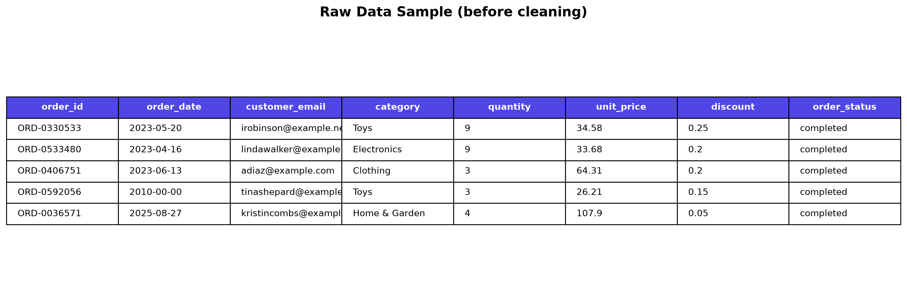
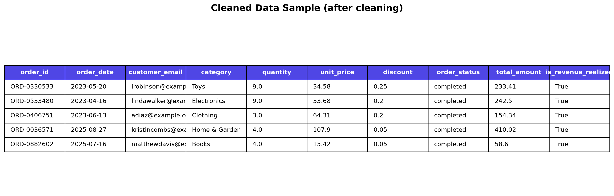
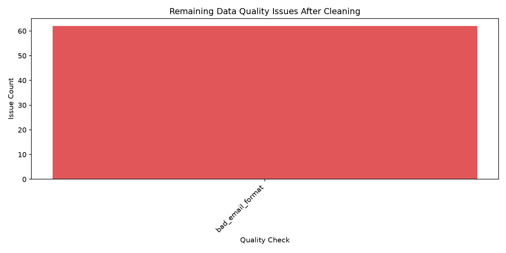
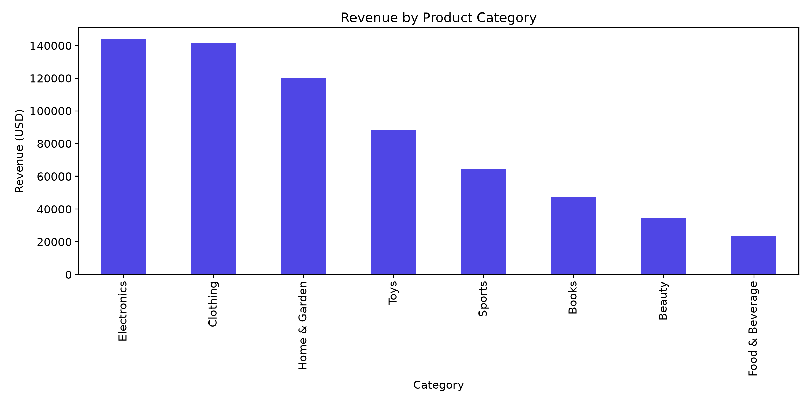

A reproducible cleaning pipeline for e-commerce exports: deduplicates, repairs, standardizes, quarantines bad rows with reasons, and validates everything with independent SQL checks.
Every defect class is detected, repaired where safe, and quarantined with an explicit reason where not. Nothing is silently dropped.
Business-key dedup on order + product + date. First occurrence kept.
Unparseable, pre-2010, or future dates are quarantined as invalid_date.
Zero, negative, or non-numeric values never reach revenue totals.
"20%" → 0.20 auto-converted. Out-of-range values quarantined.
Malformed emails flagged; rows with no identifiable customer quarantined.
Category, payment, and country variants mapped to canonical values.
One command runs it end to end. The Streamlit app mirrors every stage visually.
Real output from the pipeline and the interactive app.




Stakeholder-ready deliverables, every run.
cleaned_sales.csv / .xlsx — valid, analytics-ready recordsquarantined_sales.csv / .xlsx — bad rows with reasonsdata_quality_report.md / .json — human + machine reportssummary_metrics.csv — revenue, AOV, top category & countryPython 3.12+, one command for the full pipeline.
# install & run the entire pipeline pip install -r requirements-dev.txt python -m src.cli run-all --seed 42 # or launch the interactive app python -m streamlit run app.py